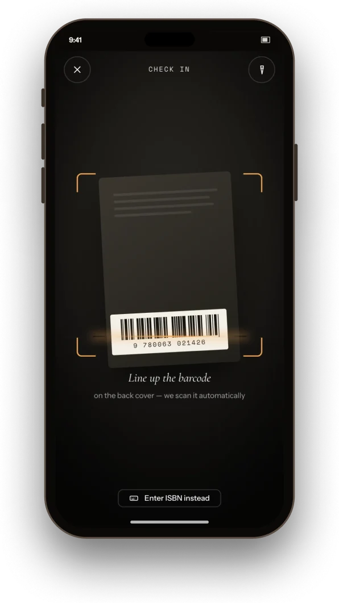
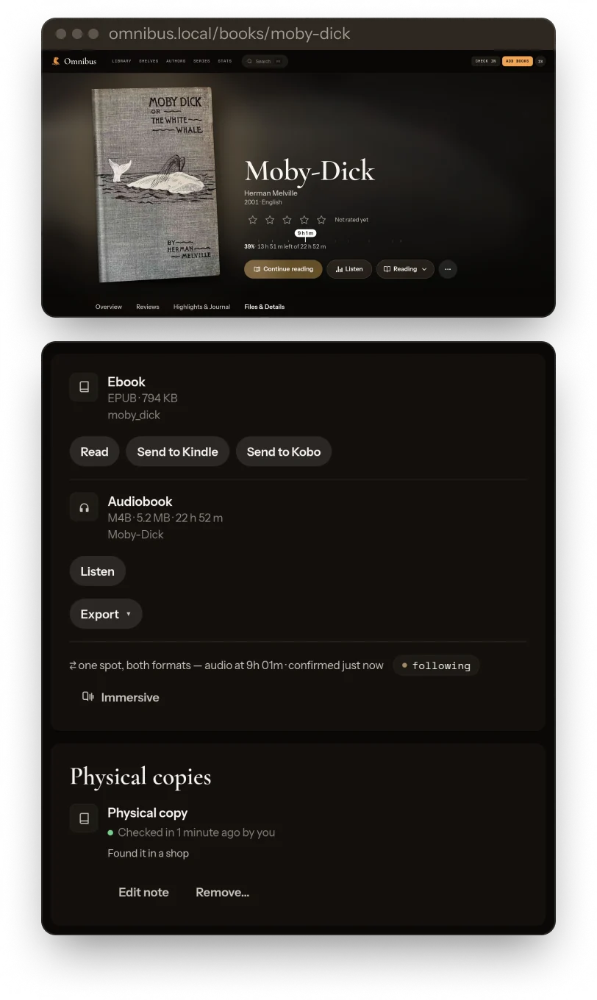
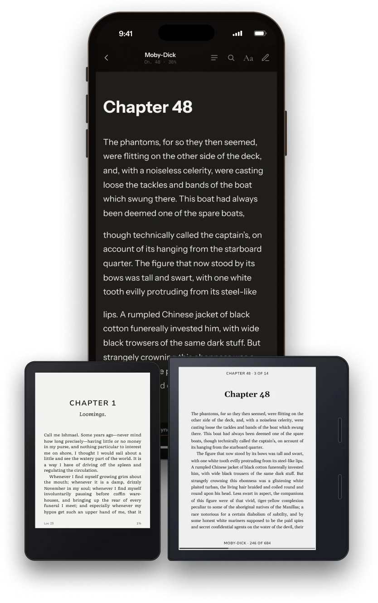
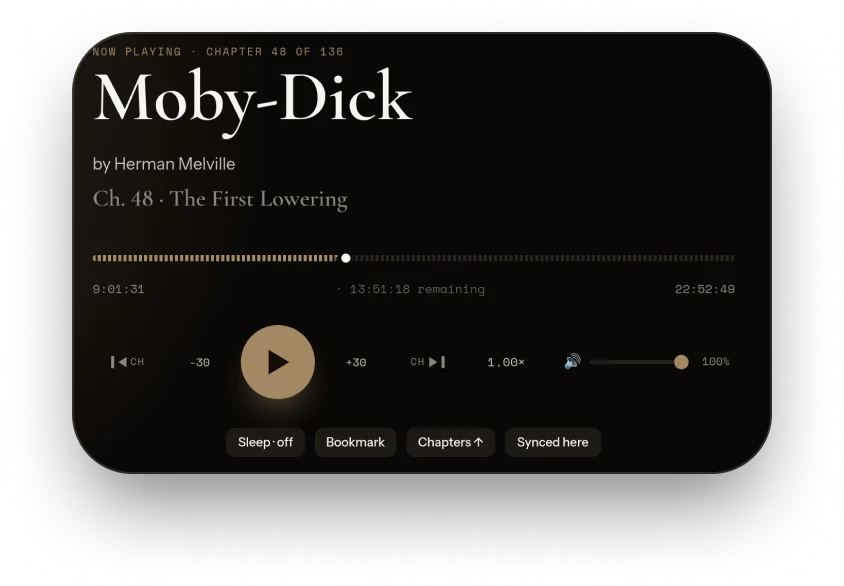
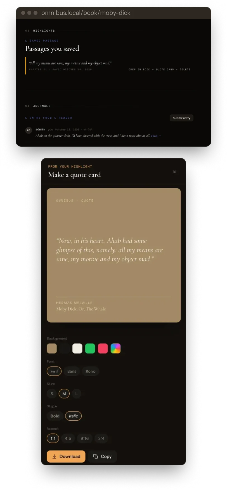
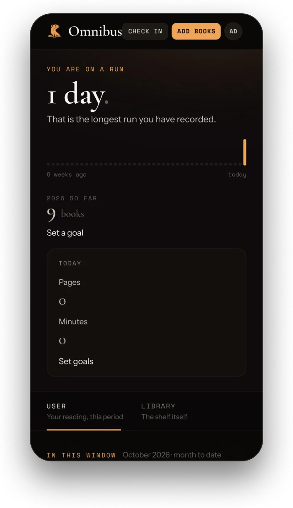
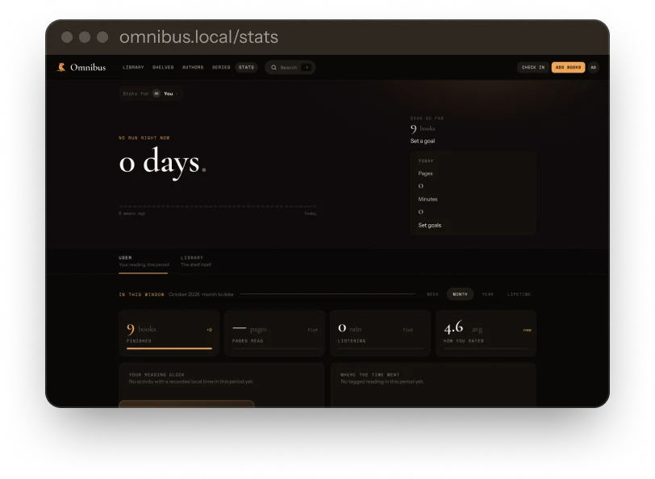
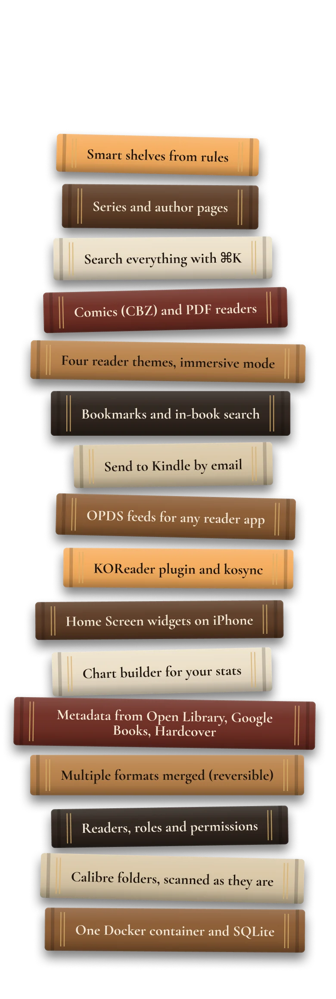

One book,
every way
you read.
Omnibus is the self-hosted library for the ebooks, comics and audiobooks you already own.
It's free, MIT licensed, and runs on a Raspberry Pi.

Spot it in a shop.
Scan the barcode with the iPhone app, or type the ISBN in the browser. Omnibus checks your library first, then Open Library and Google Books, and checks in the physical copy you own or puts it on your wishlist.

Home, in every format.
Omnibus reads any folder of ebooks and audiobooks and skips the formats it can't open. Once a file is in the library, Omnibus never writes to it. Your edits live in the Omnibus database and reach a book only when you export it or sync it to a device.
Check in the books on your shelves at home, and each physical copy appears next to its ebook and audiobook.

Read on your favorite e‑reader or phone.
Mark a shelf "Sync to my devices" and your Kobo or KOReader pulls its books, progress, highlights and stats on every sync. Kindle readers get books by email with Send to Kindle.
Kobo, KOReader and the apps all report your place to the server, so the next device you pick up opens where you stopped.
The iPhone app downloads books and audiobooks for offline use, so you can keep reading without a connection.

Hear the next chapter.
Link the ebook and the audiobook once, and your place carries over between them. Omnibus lines them up by chapter title or by sync points you set.
You can also play the audiobook while you read along in the ebook.
Change the playback speed, set a sleep timer, browse chapters and bookmarks, and switch to Car Mode in the iPhone app to scrub through a chapter on your commute.

Then talk it over.
The MCP server can read what you've finished, your highlights, your library and your reading stats.
Ask your LLM about a book, and it can catch you up on what you missed without spoiling what's ahead, or start a conversation about a passage you highlighted.
Organize your library with one prompt. The Omnibus MCP can fix metadata and create shelves for you and your household.

Finish it. Share your thoughts.
Rate it, review it, keep a journal as you read, and turn any highlight into a customizable quote card to download or share.

Watch the year add up.
Keep a streak going, browse a reading calendar, see which hours of the day you read, and set goals for books a year or pages and minutes a day.

The whole house reads.
Everyone gets their own account, shelves and progress on the same library, and each reader decides whether to share their stats with the house.

What only Omnibus does.
- It never writes to your files.
- Omnibus keeps your edits as overrides in its own database and writes them only into the copies it exports. Your folders stay as you left them.
- One book across every format.
- Ebook, audiobook and physical copy share one record, and your place moves between the formats.
- Your AI can join the book club.
- The MCP server has 51 tools. Your AI can search the text without spoilers, build a shelf from one sentence, and show you metadata fixes before it applies them.
A new release ships with every merge to main.
The page reads these numbers from GitHub when it loads.
Read the release notes →
And the rest of the shelf.
- KOReader plugin and kosync
- OPDS feeds for any reader app
- Home Screen widgets on iPhone
- Send to Kindle by email
- Chart builder for your stats
- Bookmarks and in-book search
- Metadata from Open Library, Google Books, Hardcover
- Multiple formats merged (reversible)
- Four reader themes, immersive mode
- Comics (CBZ) and PDF readers
- Readers, roles and permissions
- Search everything with ⌘K
- Calibre folders, scanned as they are
- Series and author pages
- One Docker container and SQLite
- Smart shelves from rules
Start your own library tonight.
Omnibus runs in one container on top of the folders you already have, and setup takes a few minutes. Join the Discord for an invite to the iOS app in TestFlight.